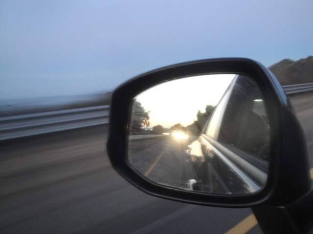
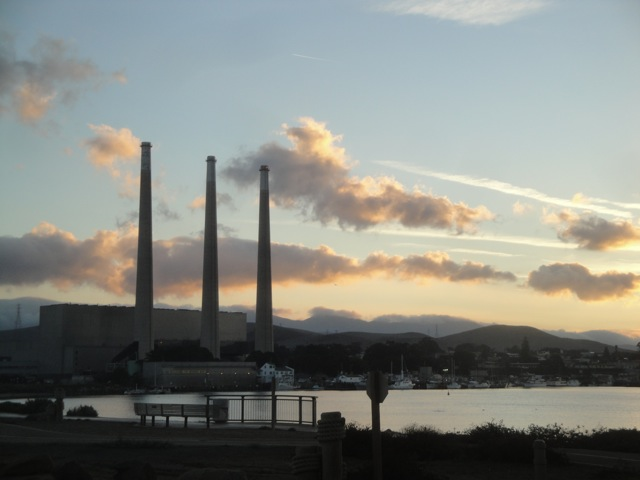
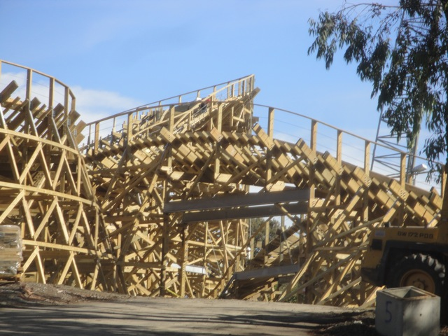

Glass Beach Road Trip 2012
San Francisco Glass Beach Santa Cruz Beach Boardwalk

So, a couple months ago, we found a place online called Glass Beach and found it really cool and wanted to go there sometime. A couple days later, Cody pitched the idea of us doing a Northern California Road Trip where we go to Glass Beach. Throw in exploring San Francisco and getting some rides in on the Giant Dipper and we have ourselves a 3 day road trip. And keep in mind, this is the first ever Incrediblecoasters Road Trip. Now you know we've done many major trips before. That's how we've gotten on all these credits across North America and Europe. But this is the very first multiple day trip we've done completely on our own, without any aid from anyone. This is a solely Incrediblecoasters Trip. There was no help from any groups like Theme Park Review, Thrill Coaster Tours, etc. The entire trip was planned and financed ourselves. Before this, we had only done single day trips on our own. And man was it an awesome trip for our first ever Incrediblecoasters Road Trip.
Damn! Check out that beautiful sunrise!! =)
All right!! First stop of the morning, Morro Bay!!! Everyone get out, stretch their legs, and get some food out of the trunk!!!

Someone put a flying pig here RIGHT NOW!!!!!
I always came here for Cross Country races back in High School, so it was nice to come here, see the places beauty without being covered in sweat running away from the rock.
Hello there otters. Hows it going!!! =)
Next stop!!! Black Sand Beach in Central California right off the PCH.
Yes, you can go past the fence. Though you can't actually get down to the beach since its on a cliff.
Its a cool beach where the sand looks sort of black, but its not too special. Now there's a beach in Greece that actually does have black sand that I want to go to. But this'll do for now.
Yep. They had to put up a sign that says "No sh*tting on the beach."
"Hello Mountain. Hope you like fog, cause I've got some special fog just for you." =)
"I GOT PLANTS!!!!"
"GOD DAMMIT!!!! WHAT'S THE HOLD UP OVER HERE!!!! WE'VE BEEN WAITING HERE FOR 10 MINUTES AND YOU HAVEN'T GIVEN US ANY EXPLINATION OF WHATS GOING ON!!!!!"
Ok. This backstage tour drive is worth the 10 minute hold up.
We're Following the Leader!!!!
For some reason, this bridge is famous. Not sure why, but we crossed it.
All right. Time for our next beach stop. Pfeiffer Beach.
HOLY SH*T!!!! THIS BEACH IS SO F*CKING BEAUTIFUL!!!!!
Yeah. I love this beach so much.
 I wish we could've spent more time here. But whatever. More for next time.
I wish we could've spent more time here. But whatever. More for next time.
TAKE THE TUNNEL!!!!!
Apparently, this place is not only famous for the beach, but also this wheel. The beach, I can totally see why. But why this wheel? Are there just wooden wheel enthusiasts who come here to check it out?
"GRR!!!! THIS ROAD TRIP IS MAKING ME SO ANGRY THAT I'M TURNING INTO A LION!!!! GIMME AN OWL!!!! NO, I'M NOT GOING TO EAT IT!!!! I'M GOING TO KEEP IT AS MY PERSONAL PET!!!! DON'T YOU KNOW ANYTHING ABOUT ME!!!!? I OUGHT TO MAUL YOU TO DEATH JUST FOR SUGGESTING I DO SOMETHING LIKE THAT!!!!!"
Since we were right by, we decided to stop by California's Great America and get some Gold Striker construction photos.

Holy Crap!!! This ride is getting built FAST!!!! I was not expecting it to be this done already!!!
I'm really looking foreword to riding this next year. Hoping that this turns out to be one of the better GCIs.
"Can you please open up the park and let us get a quick ride on Top Gun in? Pretty please?" ='(
Ugh. Can't believe we never got an It's It on the entire trip.
We're here!!! We made it to San Francisco!!!
I've only been here for 5 minutes and I already declare it much better than L.A!
We drove down Lombardi three different times on this trip and didn't regret it once. =)
We'll get back to you later Golden Gate Bridge.
I'm pretty sure there's still some heroin in that needle. Only one way to find out for sure though. =)
"Why the f*ck did I think I'd need a knife on this trip again?"
We decided to take a little stroll through Golden Gate Park. Yep. NYC has Central Park and San Francisco has Golden Gate Park.
 Hmm. I've got a bathing suit on under my shorts. WATERSLIDE TIME!!!!!
Hmm. I've got a bathing suit on under my shorts. WATERSLIDE TIME!!!!!
Ok, seeing where the water comes from, don't ride down the waterfall.
We decided to check out the Japanese Tea Garden, as hey. The place is awesome. And check out their awesome bridge.
Awesome Japanese Tea Garden Bridge POV.
"Hello there fishy. You want some of my Ramune?"
 Group Photo of us on the awesome Japanese Tea Garden Bridge. And BTW, if you look at the reflection of the bridge, it forms a perfect 360 degree circle. We didn't know this till after the trip and are kicking ourselves for not checking it out. But whatever. I don't mind coming back here next year. But I just want to tell you now in case you're going to San Francisco any time soon.
Group Photo of us on the awesome Japanese Tea Garden Bridge. And BTW, if you look at the reflection of the bridge, it forms a perfect 360 degree circle. We didn't know this till after the trip and are kicking ourselves for not checking it out. But whatever. I don't mind coming back here next year. But I just want to tell you now in case you're going to San Francisco any time soon.
 All right. Its time to cross the Golden Gate Bridge.
All right. Its time to cross the Golden Gate Bridge.
I suddenly feel so small.
Yep. We're driving on the Golden Gate Bridge.
This is awesome (for the first time).
I see you Suicide Hot Line.
This tunnel is dedicated to all of our gay friends out there.
This view of San Francisco is awesome.
Unicycling right by the Golden Gate Bridge.
I personally love this photo. I really do.
I see you Pyramid Building.
We decided to hang out for the night in Japan Town.
Holy Crap!!! I love this place already!!!
Curry Good!!! Curry Curry Curry Curry Curry Curry Curry Curry!!!!!! =)
All right. This is pretty f*cked up here.
Time for some fun in the Japanese Arcade.
I FOUND THE TAIKO DRUM GAME!!!!
TAIKO DRUM GAME GOOD!!!!! =)
All right. Before we head up on an 8 hour overnight Suicide Drive, we made a quick stop at Six Flags Discovory Kingdom (Superman looks better in person).
Hey Alex!!! Hows it going!!! =)
Glass Beach
Home